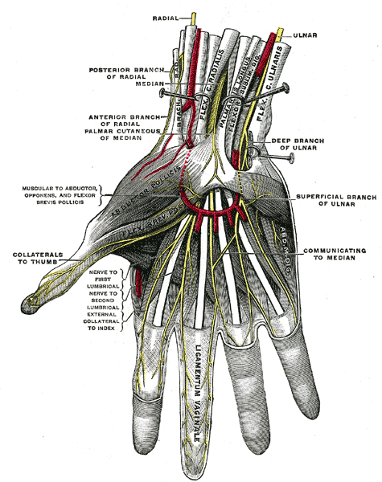

Después de la cirugía
Después de la reparación de nervio
Los nervios sanan lentamente. La protección en las primeras semanas y la paciencia durante muchos meses son las claves de un buen resultado.

Lo que se hizo
Un nervio cortado o dañado fue reparado. Dependiendo de la lesión, esto fue una reparación directa (los dos extremos cosidos entre sí), una reparación con conducto o aloinjerto (un pequeño tubo o nervio procesado usado para cubrir una brecha), o un injerto nervioso (un pequeño trozo de un nervio menos importante usado para cubrir una brecha más larga). Está en una férula que mantiene el brazo o el dedo en una posición que protege la reparación.
Las reglas más importantes
- Use la férula en todo momento durante las primeras 3 semanas. No la retire para revisar la incisión ni para lavar.
- No estire ni cargue la reparación. Estirar puede separar la reparación.
- Mantenga la férula limpia y seca. Mantenga la mano elevada tanto como sea posible.
Las primeras 3 semanas
- Férula puesta continuamente.
- Mueva las articulaciones que no están en la férula (hombro, codo, otros dedos) para evitar la rigidez.
- Analgésicos según lo recetado. La mayoría de los pacientes pasan a acetaminofén o ibuprofeno en unos pocos días.
- El dedo o la mano se sentirá entumecida — esto es esperado mientras el nervio se cura.
Semanas 3 a 6: movimiento protegido
- La férula se retira para terapia suave y actividades diarias ligeras, aún puesta por la noche y en situaciones riesgosas.
- La terapia de mano comienza un movimiento cuidadoso de las articulaciones que el nervio cruza.
- Sin levantar peso, agarrar ni estirar el nervio reparado.
¿Qué tan rápido se recuperan los nervios?
- Los nervios crecen por el brazo a aproximadamente 1 pulgada por mes, o 1 milímetro por día.
- Una reparación de nervio digital en la base del dedo a menudo muestra retorno de la sensación en la punta del dedo a los 3 a 6 meses.
- Las reparaciones más altas (en la muñeca, antebrazo o por encima del codo) pueden tomar de 12 a 18 meses, a veces más, antes de que los músculos y la sensación se recuperen.
- El retorno de la función rara vez es del 100%. El objetivo es una recuperación significativa, no la perfección.
Señales de que el nervio se está curando
- Una sensación de hormigueo o "alfileres y agujas" cuando golpea a lo largo del curso del nervio. Esto se llama signo de Tinel y se mueve hacia abajo por el brazo a medida que el nervio crece.
- Retorno gradual de la sensación — primero un zumbido o una sensación extraña, luego el tacto real.
- Retorno gradual de la fuerza muscular (para los nervios que controlan los músculos).
Desensibilización y terapia
A medida que regresa la sensación, el área puede sentirse muy sensible o incluso dolorosa. Golpear suavemente a diario, frotar con diferentes texturas y la terapia de mano ayudan al nervio a madurar y al cerebro a volver a aprender la señal. Esta es una parte clave de la recuperación.
Seguimiento
Se le verá a los 10 a 14 días para un chequeo de la herida y retiro de suturas, luego a las 6 semanas, 3 meses, 6 meses y 12 meses. El seguimiento a menudo incluye examen del signo de Tinel y, a veces, un EMG repetido para seguir la recuperación.
- Siente un "chasquido" repentino o un tirón en el sitio de la reparación
- La férula se moja, se rompe o se siente floja
- Tiene fiebre superior a 101°F o la incisión está drenando pus o extendiéndose enrojecimiento
- El dedo o la mano se vuelve fría, pálida u oscura
- Dolor severo que no se controla con sus medicamentos
Relacionado
¿Preguntas?
Llame al consultorio al 646-501-4950, o consulte nuestra información de contacto.